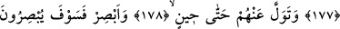

BÜTÜN PEYGAMBERLERE
SELÂM OLSUN!
171. Andolsun ki, peygamber kullarımıza söz vermişizdir:
172. Onlar mutlaka zafere ulaşacaklardır.
173. Bizim ordumuz şüphesiz üstün gelecektir.
174. Onun için sen bir süreye kadar onlara aldırma.
175. Onların halini gör, onlar da görecekler.
176. Azâbımızı acele mi istiyorlar?
177. Azap yurtlarına indiğinde, uyarılanların (fakat yola gelmeyenlerin) sabahı ne
kötü olur!
178. Sen bir zamana kadar onlara aldırma.
179. Onların halini gör, onlar da göreceklerdir.
180. Senin izzet sahibi Rabbin, onların isnat etmekte oldukları vasıflardan
yücedir, münezzehtir.
181. Gönderilen bütün peygamberlere selâm olsun!
182. Âlemlerin Rabbi olan Allah’a da hamd olsun!
“Andolsun ki,” ezelde yahut levh-i mahfuzda her hareket ve sükûnda bize ihlasla
ibadet eden, kendilerine kullukta ihlas şerefine bir de risalet şerefini ziyade ettiğimiz
“peygamber kullarımıza söz vermişizdir:”
Bir şeyin zamana bağlı olarak öne geçmiş olması insana göredir. Yoksa Allah’a göre
durum hep olduğu hal üzeredir.